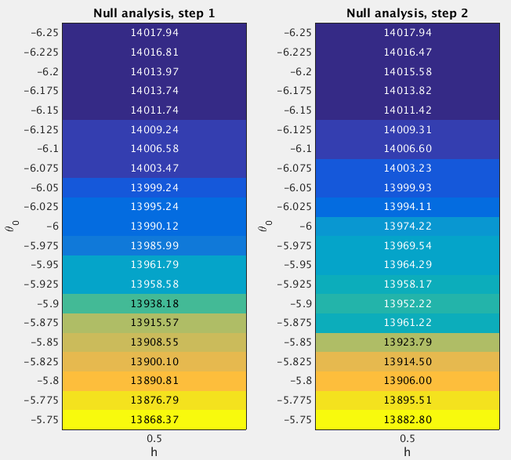

24.2 GSEA Round 2
Last updated: 2017-04-12
Code version: 165dd72eeaecde46dbd09f1ee0d64c1b665f38fb
24.2.1 Fit the null model
From the Round 1 null analysis (Section 24.1), I found that almost 100% posterior mass is concentrated on the setting (h=0.5, theta0=-6). In Round 2, I used a finer grid. Specifically, I used the grids theta0=(-6.25:0.025:-5.75)' and h=0.5 when fitting the null model. I estimated the (unnormalized) log importance weights (“pseudo-likelihoods”) for all 21 sets of (h,theta0) under null.

After normalizing the log “pseudo-likelihoods” (logw.step*) to posterior probabilities (posp.step*), we can see that almost 100% posterior mass is concentrated on the settings h=0.5 and theta0=(-6.25:0.025:-6.1)'.
theta0.index <- as.character(null.df$theta0) %in% as.character(seq(-6.25,-6.1,by=0.025))
sum(null.df$posp.step2[theta0.index]) ## [1] 0.999999724.2.2 Fit the enrichment model
To perform GSEA, I set h=0.5 and theta0=(-6.25:0.025:-6.1)', since the null analysis suggests that almost 100% posterior mass is placed on these settings. For the log-fold enrichment parameter, I use the grid theta=(0:(5.2/260):5.2)', based on the Round 1 enrichment analysis (Section 24.1). The following table lists the GSEA results.